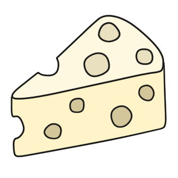
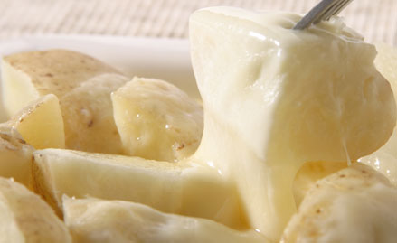

とろけるチーズとは？

とろけるチーズは、日本でもなじみの深いプロセスチーズのうちの一つであり、ナチュラルチーズを1種類または数種類混ぜて加熱し、加工したものです。ナチュラルチーズに含まれていた乳酸菌やカビなどはこの時点で死んでしまいますので、チーズ特有の熟成というものがなく、味が一定で保存性に優れています。
普通のプロセスチーズと違って、とろけるチーズは熟成期間が短いという違いがあります。これは、熟成が若い方が、糸引性があるためです。また、プロセスチーズの製造工程では、通常乳化剤を添加して、脂肪球を安定させる必要があります。このとき、乳化剤の種類と、量を調節することで、さらに“とろけ感”を出すことができます。